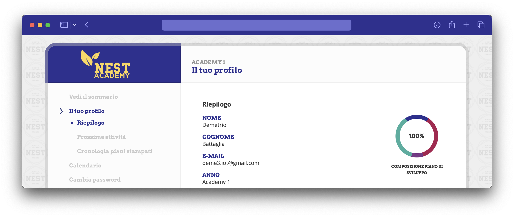

NEST Academy

Proprietary platform for students to create a study plan and have a personal agenda in the NEST Academy programme.
Back-end written in Express.js + EJS + MySQL, front-end vanilla HTML / CSS / JavaScript.
Currently being rewritten using Preact.js.
About the project
NEST Academy is an excellence program inside the college of NEST Trento aimed towards enriching the University experience with extracurricular courses that range from soft skills training to language courses, starting September.
A proposal of the project was made in August, setting the first phase deadline in September. Considering the strict deadline, we needed to focus on the minimum set of necessary functionalities for the students to make use of the platform and the staff to benefit of it, but also to have a sort-of open beta stage to gather more info on what students and coaches alike need to have an easier life.
Software design
In order to make a good product, both in terms of user-friendliness and developer-friendliness, one has to first make a lot of design choices. Starting from database, I chose to use one of the most popular DBMSs in the industry: MySQL (according to the latest statistics, it's second only to Oracle, and has maintained a steady popularity across the years).
Keep in mind, it's not just a matter of trends: it's about maintainability. This kind of decision about maintainability can be made for every external tool or library used in a project: Express.js and EJS are two other examples.
One thing is missing from this maintainability list: the front-end stack. I initially chose to not make use of any framework available in the industry, put simply because I despise the performance trade-offs they ship with: this kind of software should focus on user-friendliness first, and developer-friendliness last.
However, one relatively new player has entered the scene: Preact.js. It's a React-like framework that is way faster than React itself, and poses little performance overhead to the user. This will allow faster development thanks to component re-usability and modularity in general, while still keeping an acceptable performance even for less capable machines. Plus, it's still JSX, which is now more and more widespread. Svelte might be a worthy opponent (being it even lighter than Preact.js), but it doesn't come with JSX out-of-the-box, for good reasons.
UI Design
Disclaimer: I'm not qualified (yet) to give full-fledged UI analysis. But I will explain a little about the design choices I've made.
We needed something welcoming, NEST Academy is a relatively new concept in the NEST community, and NEST itself is still a fast-growing reality, hence, a desirable property for the website is for the average freshman to be greeted with all the information they need to fill out their study plan, at a glance. In addition, it must be a familiar, streamlined process for the student to complete, as it's only the first step in the Academy journey.
As you can see, the page is somewhat structured like a classic “installation wizard”, but instead of accepting ToS and installing toolbars, the student is presented with all the activities they can participate in, with all the relevant information: date, time and awarded credits (expressed in hours). By checking each activity, the progress bar will move, indicating when the student has fulfilled their minimum study requirements to obtain the title.
Once a student has completed their study plan, they can access a summary of the chosen activities and a personal calendar with all the upcoming activities (as seen in the above screenshot).
After collecting all the data from students and coaches, the second development phase may begin. There will likely be separate control panels for administrators, coaches and technical support staff.